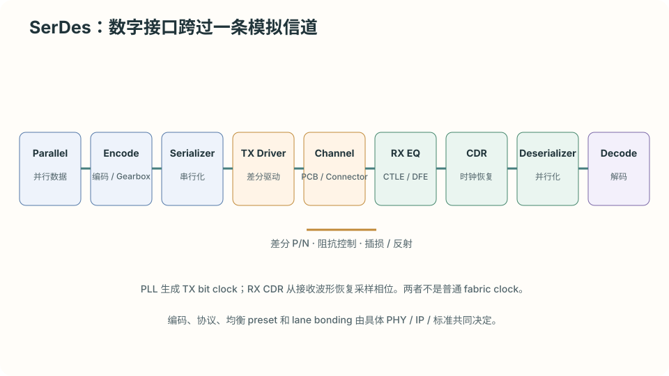
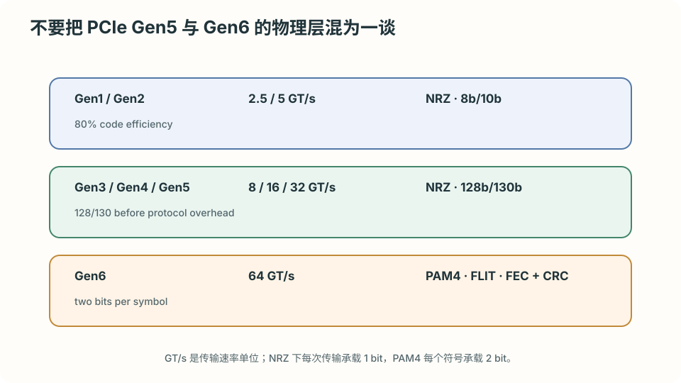
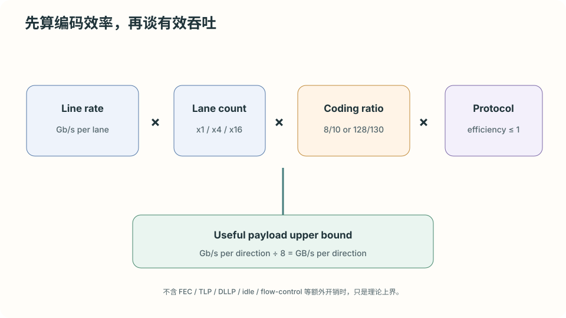

高速串行接口：SerDes、均衡、PCIe 代际与链路预算
从差分物理信道和收发器内部结构出发，理解编码效率、CDR、均衡、PCIe Gen1–Gen6 与 MIPI D-PHY 的实现边界。
01 / 为什么用 SerDes：并行总线的时序预算变得昂贵
高速串行链路并不是把并行线简单减少成一对差分线。它把问题从“许多数据线必须同时到达”转换成“单条高速模拟信道能否在抖动、插损、反射和噪声下可靠恢复时钟与数据”。

并行总线的位宽越大，越需要控制 lane-to-lane skew、走线长度、时钟偏斜和同时开关噪声。SerDes 通过高速串行化减少高速数据对数量，但每一条 lane 都要面对通道损耗、反射、串扰、随机/确定性抖动和接收采样相位问题。它没有“消除物理层问题”，而是用差分传输、时钟恢复、均衡和链路训练来管理这些问题。
差分接收器比较 P/N 两端电压，能抑制一部分共模噪声；但差分阻抗、回流路径、连接器、过孔、参考时钟质量和 PCB stack-up 仍然决定链路质量。高速接口设计必须把 FPGA、封装、PCB、连接器和对端 PHY 当作一个完整 channel。
02 / 收发器内部：PLL、Serializer、CDR 与均衡器
发送路径通常包括并行用户接口、编码/gearbox、serializer、TX driver 和可配置发射均衡；接收路径包含模拟前端、CTLE/DFE（器件支持时）、CDR、deserializer、解码和用户接口。PLL 由参考时钟合成高速发送时钟；CDR 则从接收数据的边沿信息恢复采样时钟。两者职责不同，不能把 CDR 当作普通 fabric PLL。
通道插入损耗会让高频分量衰减更明显，造成码间干扰（ISI）和眼图闭合。TX pre-emphasis / de-emphasis 调整发送端符号幅度；RX CTLE 提升高频成分，DFE 利用已判决符号估计后游标干扰。均衡参数不是“越强越好”，需要在实际 channel、速率、编码和误码率条件下调试。
AMD UltraScale+ 资料列出 GTH、GTY、GTM 等不同收发器类型及各自线速率范围；例如 UG1192 给出的 GTH 与 GTY 上限不同，而具体器件 speed grade 和电源条件还会进一步限制可用速率。不要把一个家族某个型号的数据表上限写成所有 FPGA 的通用值。AMD UG1192 · UltraScale+ Portfolio Transceivers。
03 / 编码效率与 PCIe 代际：Gen5 仍是 NRZ，PAM4 从 Gen6 开始

8b/10b 将 8 bit 数据映射为 10 bit 符号，编码效率为 80%；它有利于控制运行差异并提供足够跳变，但带来 20% 编码开销。PCIe Gen1/2 使用 8b/10b。PCIe Gen3/4/5 使用 128b/130b，编码效率约 98.46%，但 TLP、DLLP、流控、空闲序列等仍占用链路容量。
重要更正：PCIe Gen5 的 32 GT/s 使用 NRZ 与 128b/130b；PAM4 不是 Gen5 的信令方式。PCIe 6.0 引入 64 GT/s PAM4，并配套 FLIT 模式、低延迟 FEC 和 CRC。PCI-SIG 的 Gen5 FAQ 与 Gen6 说明明确区分了两代技术。PCI-SIG · PCIe 5.0 line rates；PCI-SIG · PCIe 6.0 features。

本仓库提供一个 NRZ 链路预算小工具。以 PCIe Gen5 x16 为例，使用 32 Gbit/s/lane、128b/130b，得到编码后约 503.385 Gbit/s，即约 62.923 GB/s/方向；这仍未扣除 TLP/DLLP 等协议开销，也不是应用实际吞吐。
python3 scripts/serdes_budget.py \
--line-rate-gbps 32 --lanes 16 --coding 128b130b
# raw_gbps_per_direction: 512.000000
# after_line_coding_gbps: 503.384615
# after_protocol_overhead_gBps: 62.923077该工具只处理 NRZ 原始 bit rate、8b/10b 或 128b/130b 线编码和用户给定的协议效率折减；不模拟 PAM4、FEC、链路训练、重传、TLP 结构或真实 PHY。
04 / FPGA 收发器选型：看器件数据表，而不是记一张过期速率表
AMD UltraScale+ Portfolio 文档给出的范围是：GTH 约 0.5–16.3 Gb/s NRZ，GTY 约 0.5–32.75 Gb/s NRZ；但不同 FPGA 型号、speed grade、电压和参考时钟会进一步约束可用工作点。应当回到目标器件 datasheet 与对应 Transceiver User Guide，检查 PLL 选择、refclk 输入、通道位置、TX/RX 支持、均衡模式、lane bonding 和 PCB 要求。
高速链路 bring-up 通常先验证参考时钟和复位顺序，再检查 PLL lock、CDR lock、PRBS 误码、均衡、lane polarity、lane alignment、协议训练状态和最终数据完整性。IBERT 等工具可帮助检查收发器眼图/误码，但具体能力由器件与工具版本决定。
PCIe 也不是“接上 GTP 就有 PCIe”。需要 PCIe PHY、Data Link、Transaction 层和相应 Endpoint/Root Complex IP，外加参考时钟、复位、lane 配置、板级连接与主机驱动。DMA IP 只是系统数据搬运方案之一，并不自动替代协议栈与软件验证。
05 / MIPI CSI-2 / DSI：电气层与协议层必须分开
MIPI CSI-2 用于摄像头数据输入，DSI 用于显示输出；D-PHY 定义物理层 lane 的高速/低功耗状态、电气行为和时序，CSI-2/DSI 则定义上层 packet 与传输语义。不要把 D-PHY 简化成“LVDS 差分对”，也不要假设一个通用电阻网络就能替代符合规范的 PHY。
在 FPGA 项目中，应确认目标器件是否提供对应 MIPI D-PHY 接收/发送能力、是否有官方或第三方 PHY IP、I/O bank 电压和管脚是否满足要求，以及是否需要外部桥接芯片。还要分别验证 lane 数、速率、clock mode、LP/HS 转换、lane mapping、packet ECC/CRC 和图像格式。
最终选择取决于 FPGA 型号、板卡原理图、传感器/显示器接口、数据率和工具/IP 许可。没有目标板和完整电气设计时，不应给出“某电阻网络可稳定跑到某 Gbps”的通用结论。
06 / 高速链路 Bring-up 清单与边界
- 从器件数据表确认收发器类型、速率范围、refclk、供电和可用通道。
- 从板级原理图确认差分对、参考时钟、连接器、极性、走线和 AC coupling。
- 先用 PRBS/IBERT 检查物理链路，再进入协议训练。
- 逐项确认 CDR/PLL lock、lane alignment、均衡、误码计数和协议状态。
- 最后才验证 PCIe enumeration、DMA、驱动或 CSI-2/DSI 图像数据。